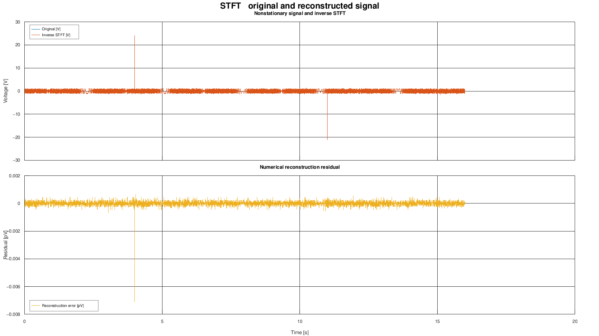
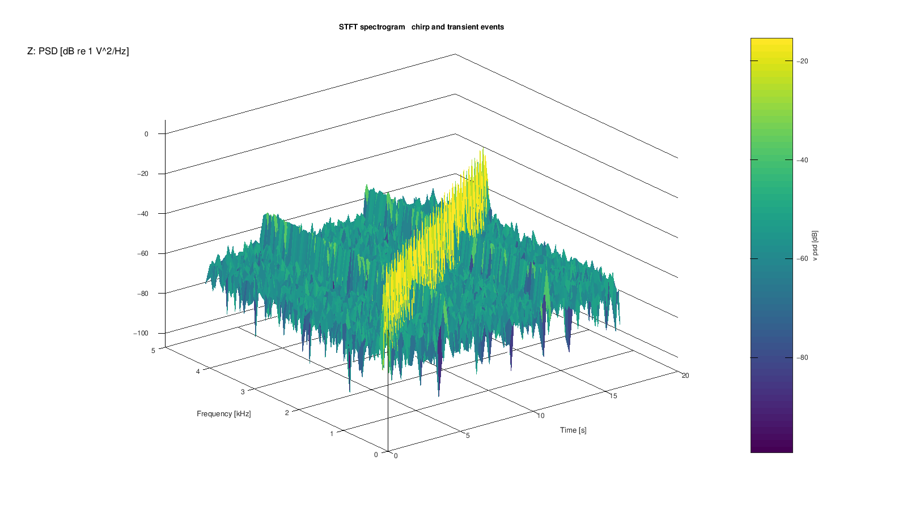

Curated archive GX-TXT_Tutorial_CURATI_con_STFT3_4_20261013.zip; archive SHA256 880b666e02eb1f8a66a9045333ebb44015a10d2f6943612d7878405d37cd70f8
Target: GX-TXT 0.9.8.10-dev-097, Debian. Figures are actual scientific render artifacts from the verified development candidate, not GUI screenshots. Scientific/API/Script evidence is retained. Additional final GUI matrices: NOT RUN — USER-ACCEPTED. Frozen release/package acceptance remains pending; the final release receipt supplies archive identity.
Create a new Session and use Python Script Workspace. Register the supplied source files under their displayed names, select the listed Analysis Source bindings, and run each stage in order. Wait for its Job to complete before the next step. Keep the original source data intact. Save the Session normally; reopening uses its persistent scientific identities.
Bind plotting primary to tutorial.stft_trace_preview and grid to tutorial.stft_spectrogram_xyz. The full matrix is tutorial.stft_complex_matrix; inverse results are tutorial.stft_reconstruction. Ordinary flat ndarray publication with explicit shape follows row-major logical order. dev097 repairs a transport regression at that boundary; the tutorial algorithm and scientific identities are unchanged. Canonical storage has separate real/imaginary variables; complex managed transport support does not imply a complex canonical storage variable. Frequency coordinates and labels use the same displayed unit (kHz in the figure).
SHA256 e874413372208b529d5ad1878d9cb34ff17195e307d9505676f6cc4012c7bda3SHA256 532ef89c49c0ac661d6811fadf0c3b76706375dfddb28f8b73f3fde4fea9e436SHA256 9bdeab494bacff7a06d19f5062ea46a94d7df5a51307bcad03865f44a03f6801SHA256 c6cce42ee4b8da52c5f3f65f2207f2630dda671a987531d9d6569ad54d849c2d| Script | Inputs | Result |
|---|---|---|
01_generate_nonstationary_signal.py | No input | Publish the 131,072-sample signal, chirp, noise and two transient events at 8,192 Hz. |
02_stft_inverse_publish.py | primary → tutorial.stft_nonstationary_signal | Publish the full 2,048 × 513 transform as separate real/imaginary float64 variables and the inverse reconstruction. |
03_plot_stft_diagnostics_v3.py | primary and grid: use the declared trace and XYZ inputs below | Create the ordinary XY diagnostic and XYZ spectrogram Variants. |
04_verify_after_session_reopen.py | Use the same persistent tutorial Session | After saving and reopening, verify the published Datasets, metadata and Variants. |
The inverse residual RMSE is 1.497736388085181e−16 V, below the declared 1e−8 V bound. Independent checks read every stored coefficient in bounded hyperslabs, compare FFT columns 0, 256 and 512, and reconstruct the complete original signal. The display uses 8,192 trace rows and 8,385 PSD cells; it does not replace the full scientific matrix. The transients remain at rows 32,768 and 90,112 with amplitudes 24 V and −20 V.

c7eb972d17fb62e92a9f710a0f6d08fa9d1bd94b5ed004273d6597930d261a2b. No historical screenshot is presented as new evidence.
e955f21c3b0df3bca2572ee83e526071d45e0460d605f55f21da7fc7ed10361e. No historical screenshot is presented as new evidence.CANONICAL_DATASET_API_v2; DATASET_VARIABLE_SCHEMA_API_v3; DATASET_METADATA_API_v1; DATASET_PUBLICATION_API_v2; SIGNAL_API_v1; PLOT_DATASET_API_v3; SESSION_PERSISTENCE_API_v1
The original generation Job took 8.996 s, graph Job 24.525 s and persistence verifier 6.133 s. The impact-only analysis/republication Job took 19.765 s, including 13.81 s for analysis/publication. Scientific execution and complete Job latency are different measurements.
All four source scripts completed. A stored-value defect was independently found and fixed; the preserved failed Session was copied for recovery. All 19 independent checks then passed on the repaired copy (checkpoint 190).
Job completion alone does not certify scientific values or graph semantics. These guides include independent value checks and actual artifact inspection. Omitted GUI tests are never counted as PASS. A release verification manifest will identify the exact frozen source and package used for installation.